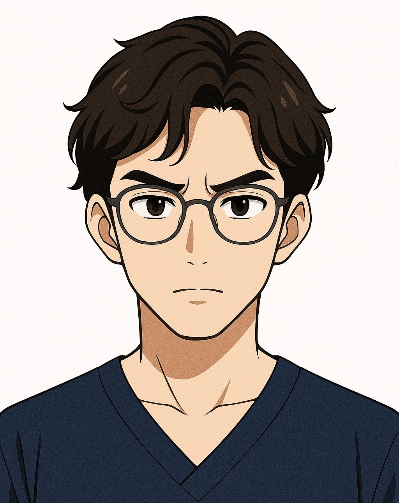

多くの看護学校は「附属病院」や「関連施設」がある
看護学校の多くは、附属の病院や系列の医療施設と連携しています。
つまり、学校の役割は「学生を教育すること」と同時に、将来その病院で働いてもらえる人材を育てるという役割も担っているのです。
特に病院附属の看護学校では、卒業後に附属病院にそのまま就職することを前提としているケースも多く、
入学時から「いずれはうちの病院で働いてね」といった声かけを教員から受けることもあります。
看護師は今、どこの医療機関でも深刻な人手不足です。
病院側としても、信頼できる看護学校で学んだ学生をそのまま採用できるのは非常にありがたいこと。
そのため、学校・病院・学生の三者にとって「採用につながる進路」はとても重要な視点になっています。
�
会話形式：就職を意識した面接って？
看護学校の面接って、普通の学校みたいに志望動機を話すだけじゃないんですか？

それが違うんです。看護学校の多くは附属病院があるので、面接は“この人と一緒に働けるか”という視点でも見られているんですよ。

そうです。実際に“この病院に就職したい？”とか“長く働けそう？”って質問されることも多いですし、実習先で“卒業したらここに来てね”と声をかけられることもあるんです。

たしかに、働くことを前提に見られてるって思うと、答え方も違ってきそうですね…

その通りです。だからこそ、将来の働く姿をしっかりイメージしておくことがとても大切です。
面接で実際に聞かれた「就職を意識した質問」
- 実習先で「この病院に就職したいと思いますか？」と聞かれました
- 「長く働ける人を求めているけど、あなたは続けられそう？」と聞かれた
- 「あなたの性格は、チーム医療に向いていると思いますか？」
- 「ストレスを感じたとき、どんなふうに対処しますか？」
これらの質問はすべて、将来一緒に働く仲間として“安心して任せられるか”を見られているからこそ出てくる内容です。
面接は“教育”＋“採用”の視点で見られている
面接官は、次の2つの視点であなたを見ています：
- この人は、学校で学び続けられるか？（学習姿勢・人柄・熱意）
- 将来、病院の職員としてふさわしいか？（協調性・責任感・対人スキル）
つまり、あなたの発言は「学校生活」だけでなく「将来の職場」でどう活躍できるかも見られているということです。
よくある面接質問が“採用視点”である理由
たとえば以下のような質問、実は「就職面接」に近いです：
- 人間関係で困ったとき、どう対処しますか？
- あなたの長所・短所を教えてください
- 看護師としてどんな人になりたいですか？
これらの質問は「将来の職員像」をイメージしながら聞かれています。
面接対策では、“採用面接”だという意識を持つことが合格へのカギになります。
�
面接前に確認しよう！“採用される受験生”チェックリスト
あなたの面接準備、実は「採用される人の共通点」を満たしていますか？
以下のチェックリストで確認してみましょう。
- 志望動機に具体的なエピソードが含まれている
- 「なぜその学校なのか？」が明確に説明できる
- 就職後の自分をイメージして話せる
- チーム医療の中で自分の役割を考えている
- 長く働きたいという気持ちが面接官に伝わる
1つでも「自信がないかも…」と思った方、大丈夫です。
マオズ予備校では、あなたの中にある想いを一緒に掘り下げ、
面接官の心に響く言葉に整えるサポートを行っています。
▶ あなたの魅力を引き出す無料相談はこちら
もっと詳しく知りたい方へ
面接対策のコツや自己PRの作り方など、さらに知りたい方はぜひマオズ予備校のトップページもチェックしてください。
🏠 ホームページを見る